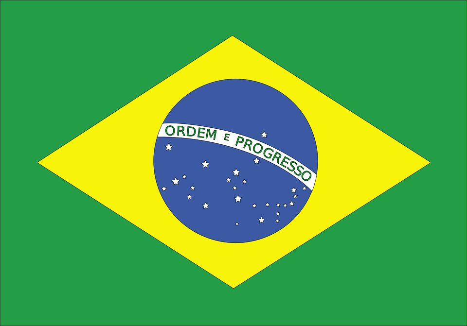
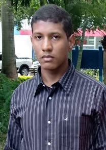

Sobre
 I am from Urâria and I am 19 years old, I studied at Etec Dr. José Luiz Viana Coutinho where I took the course of Maintenance and Support in Informatics, I finished this technical course in December 2017.
I am currently studying Technology in Internet Systems at the Faculty of Technology of Jales - Prof. José Camargo.
My hobby is studying languages and programming languages.